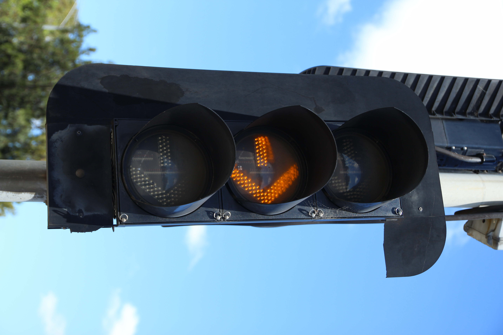

{kind=link}

Green module has been replaced, but the clear lens has been retained.
The housing here is made by AWA.
The target board has seen better days...
Some text visible on the PCB inside the light.
The second version of clear LED lights from Aldridge - These are simply standalone modules that were retrofitted into existing ATS & AWA housings in Victoria.
The only light variants made were ball signals and arrow signals - No 12" variants wre made either.
The intersections with these lights present are all on Westall Rd, Springvle, VIC, at seven intersections, listed at the bottom of the page. These were installed around the time of the Westall Rd level crossing removal project's completion, in 2001.
All lights of this version use cutaway/scoop visors exclusively.
| Ball signal | Arrow signal | Close up |
|---|---|---|
|
 | |
| Rosebank Ave, Springvale. Green module has been replaced, but the clear lens has been retained. |
Centre Rd, Clayton. The housing here is made by AWA. The target board has seen better days... |
Brear St, Springvale. Some text visible on the PCB inside the light. |